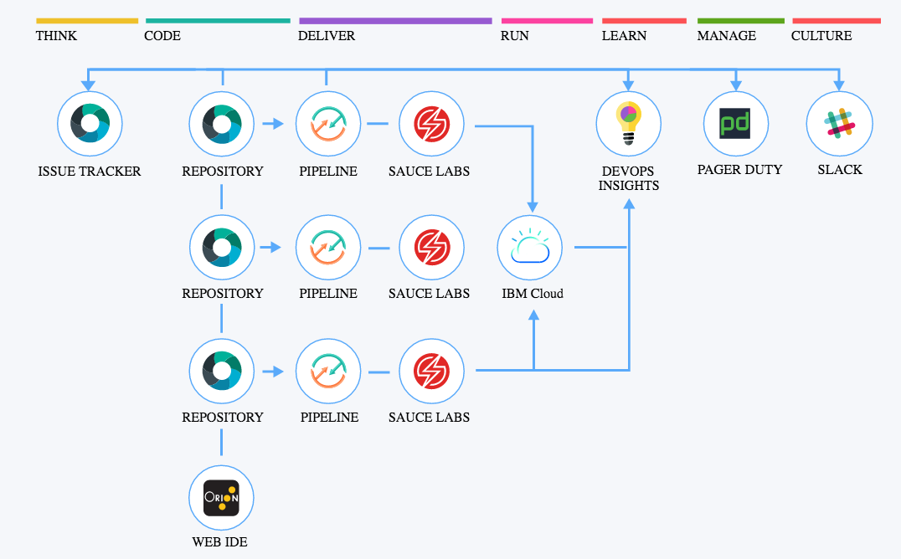

DevOps 101
The objective of the DevOps 101 is to explain how you can create a CI/CD Pipeline on IBM Cloud in order to automate full life cycle management of your application.
IBM Cloud Continuous Delivery service includes toolchains that support development, deployment and operations tasks to manage your CI/CD.
The accronym CI/CD stands for Continuous Integration and Continuous Delivery. Continuous Integration (CI) stands for the practice of developers merging their work into a shared main branch, validating the merger by creating a automatic build and automatic testing against the build. Continuous Delivery (CD) adds an automated release process to deploy an application.
See: https://cloud.ibm.com/devops/getting-started
Toolchain Pipelines

Labs
- Lab0, Setup and Pre-requisites, see Lab0,
- Lab1, Create a Toolchain to Deploy a Kubernetes App, see Lab1,
- Lab3, Create a Custom Toolchain, see Lab3,
TODOs
- Add remaining Kubernetes resources to deployment script in Lab1,
- Lab2, Create a Toolchain - Deploy a Kubernetes App with Helm,
- Lab4, Adding Tools: Vulnerability Advisor